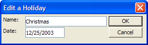
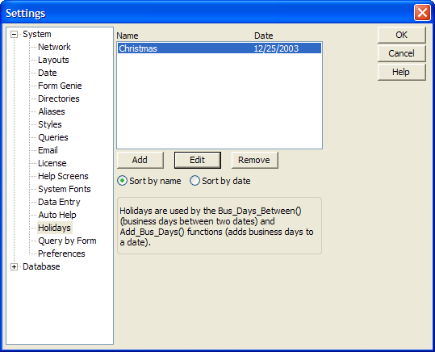

Holidays
This panel lets you enter holidays to be used in your Alpha Anywhere databases.

Adding a Holiday
One of the most useful functions of entering holidays is that when Alpha Five computes the number of business days between two dates, the holidays listed here will not be counted.
For example:

To add a holiday, click the Add button. You will be prompted for the name and date of the holiday.
To remove a holiday, highlight the holiday in the list and click the Remove button.
To change the name or date of a holiday you have already entered, highlight the holiday in the list and click the Edit button. You will be prompted again for the name and date.
The Sort by name and Sort by date radio buttons will sort the list accordingly. This can be useful if you are looking for a specific holiday.